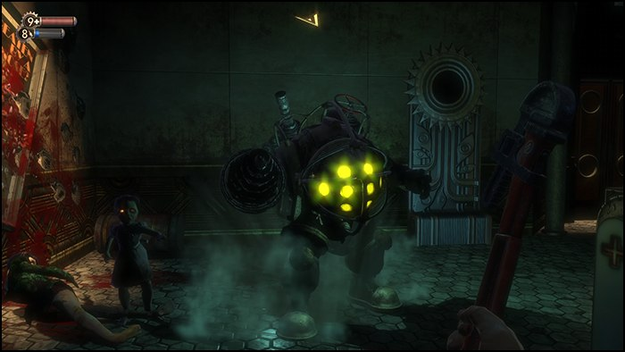
Около года назад я подарил сыну Steam Deck, как оказалось консоль подходит не только для забегов в Fortnite, но и для старых добрых хитов, которые не удавалось пройти в момент выхода. Первый Bioshock — одна из моих любимых игр, достаточно старая, чтобы показать, что принципы хорошего дизайна уровней известны достаточно давно. И хотя игра при первом прохождении, тогда в 2008, несколько разочаровала, в плане однообразности поведения NPC и боёвки, нечеткой структуры повествования и отрывочного сюжета, это не помешало ей остаться в моем личном топе игр, и архитектурный дизайн уровней сыграл здесь определенно немалую роль.
С первой тростниковой хижины первобытные архитекторы организовали выделенное пространство под задуманную цель, создавая все более сложные и развитые планировки. И конечно это не могло не отразиться на планировке уровней в играх, левел-дизайнеры выросли среди эти квадратных форм и часто вынуждены следовать устоявшимся традициям, как общечеловеческих знаний так и игровой индустрии. Немногие из них готовы рискнуть и «сделать не как все», нарушая организацию пространства в рамках существующих ограничений и придумывая действительно интересные «архитектурные решения», которые вполне могли бы существовать в реальной жизни, и поэтому не вызывающие раздражения у игроков. В дополнение к факторам «применимости» и «реалистичности» дизайнеры уровней также должны учитывать опыт получаемый игроком по мере прохождения игры, игровые механики, а порою и с такими несвойственными играм вещами, как физическими свойствами материалов, ограничением видимости зон, психологическими особенностями людей и даже «фэншуй». Про фэншуй расскажу в конце статьи, а заодно попробую показать применение разных решений и «фишечек» дизайнерами на примере уровней игры Кена Левина.
О чем игра
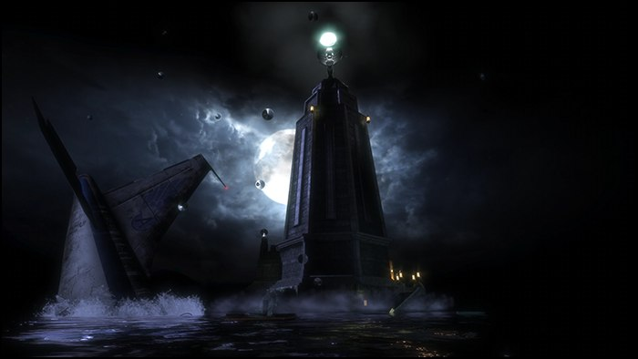
1960 год. Где-то в самолете над Атлантикой ГГ по имени Джек. Во время полета игрок достает фотографию с семьей и коробку с подарками. Он успевает вспомнить, что говорили ему родители: «Сынок, ты не такой как все, ты рожден для подвига», и в этот момент самолет терпит крушение, упав в океан. Всплываем на поверхность, оказавшись в кольце пламени, плывем к единственному просвету. На фоне луны видим маяк, стоящий посреди океана, к нему и двигаемся дальше. Внутри маяка обнаруживается батискаф, который ведет в подводный город Восторг. Во время спуска нам дают послушать разговор Джонни и Атласа, которые спорят о крушении самолета возле маяка и встрече с мутантами.
Фоновое восприятие
Здания и планировка помещений, начиная от обустройства пещер и заканчивая постройкой небоскребов, закрытые помещения всегда были частью нашей жизни. Разделяя пространство на логические зоны, мы организуем и упорядочиваем его в зависимости от назначения и наших потребностей. Здания, комнаты, повороты и двери помогают нам из хаоса открытого пространства сделать привычный человеческий мир, как связная и осмысленная речь выделяет человека среди животного мира, так и квадратные постройки выделяют цивилизацию среди природного хаоса.
Люди в процессе жизни учатся на подсознательном уровне воспринимать и обрабатывать огромное количество данных, в основном визуальных, которое спрятано в окружении. Такие данные, в отличии от текста и речи, обрабатываются в фоне и являются наследством наших навыков первобытного выживания, которые обрабатываются мозгом намного быстрее всего остального. Именно детали расскажут, что произошло и происходит в мире вокруг игрока, станут предупреждением об опасности, или расскажут о назначение предметов. Также мелкие детали создать каждому месту в игре свой особый образ.
Ограничения движков
У любого игрового уровня есть ограничения, как технические так и логические. И если с первыми все более менее понятно и ограничение становятся все незаметнее, то с логическими дизайнер может столкнуться уже значительно позже, что приводит к изменению не только геометрии уровня, но и игровых механик с ним связанных. Одним из примеров гармоничного решения архитектурных проблем можно считать создание карт для UT99, когда дизайнер уровня мог потратить чуть меньше двухсот полигонов на весь уровень, это приводило к разного рода экспериментам, в результате которых появлялись интересные решения. Например карта Facing Worlds, на которой мне довелось провести не одну сотню боев. Дизайнер пустил 140 полигонов на две башни, 30 осталось на мост, а для поверхности не осталось ничего. И это добавило новую равлекалку — сбей соперника в космос. Особенно интересно было играть 1 на 1 с другом, когда CTF уходил на второй план, а на первый желание подловить и отправить подальше и повыше.
Но когда игра претендует на механики реального мира, вроде правдоподобного перемещения по поверхностям, архитектурной достоверности зданий и объектов, подобия естественной физики, то дизайнерам приходится следовать и правилам реального мира. А правила эти очень простые, игровые элемента и механики должные иметь правдивые и знакомые элементы в реальной жизни. Впрочем, это естественное знание левел-дизайнеров из рода человеков, которое они тренируют каждый день в обычной жизни. Bioshock построен на сильно модифицированном UE2.5 с несколькими передовыми технологиями студии вроде оркестратора групповых боев и продвинутой системы укрытий и поиска пути, которые перекочевали из предыдущей игры SWAT4. Лимиты на игровую геометрию хоть и значительно были увеличены, но они все же есть, не спасал даже стриминг, который забекпортили из третьей версии Unreal. Вся статическая геометрия уровня не могла содержать больше 6к полигонов одномоментно, разработчики обходили такие моменты установкой «своеобразных ворот», как на скриншоте ниже, достаточно длинных, чтобы закрыть большую часть геометрии перед игроком. На входе и выходе ворот стояли триггеры, которые соответственно выключали и включали отдельные части уровня, а чтобы игроки не могли быстро проскочить такие ворота, там заводили мини катсцены или неожиданные игровые ситуации.
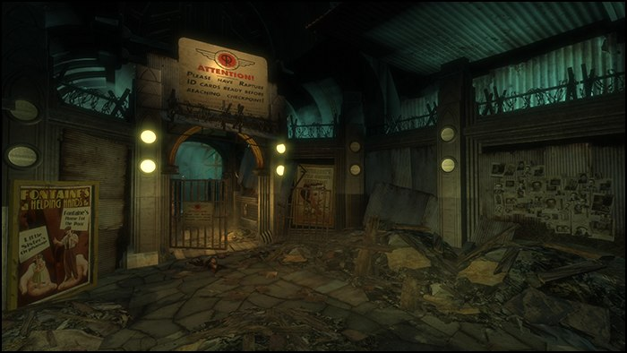
Коридоры и геометрия
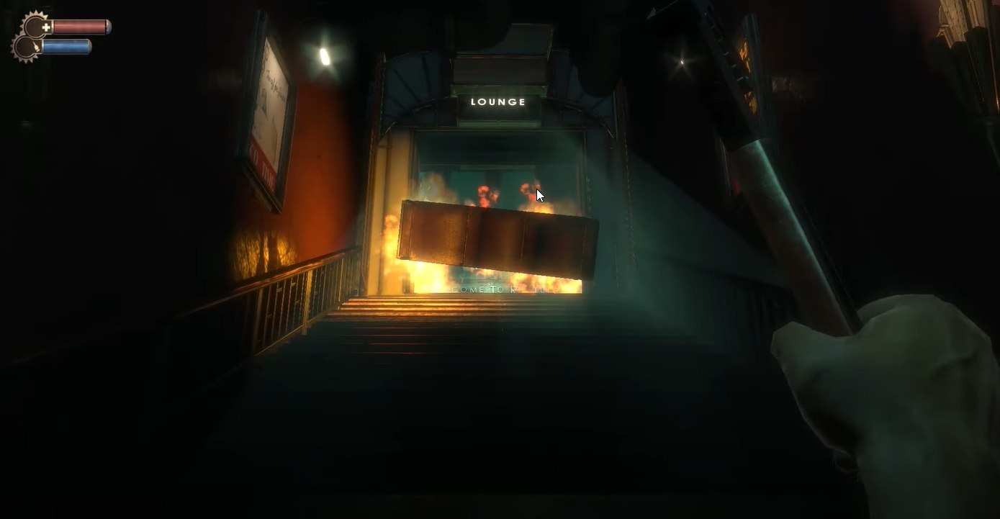
Для того, чтобы игрок не мог заранее узнать о твистах сюжета, или скрыть новых врагов его помещают в тесные помещения и коридоры, ограничивая поступление визуальной информации. Это действительно хороший способ дать передышку между боями, обычно коридоры и небольшие комнаты является и триггером для выгрузки предыдущей локации, и загрузки новой. Кроме того в узких пространствах игроки обращают больше внимания на детали и звуковую составляющую игры, эту особенность любят использовать разработчики шутеров и страшилок, подмешивая в эти моменты различные скрипы, стоны, и пугающие звуки, чтобы нагнать напряжения перед новой локацией. К тому же узкие пространства, лучше всего подходят для различных физических загадок, игроку деться некуда и время на принятие решения ограничено, чем игра будет пользоваться неоднократно, начиная с первых минут. Коридоры также легко могут быть заблокированы различными предметами, что дает возможность использовать их в качестве дверей и естественных ограничителей уровня, а логичная преграда в виде упавшего шкафа, огня и сломавшейся двери не воспринимается игроками как искусственная.
Лабиринты и тени
Наравне с узкими коридорами игра использует их неестественные пересечения под острыми углами, это не позволяет игроку сконцентрироваться на точке выхода в следующую локацию, а темнота на уровне превращает, вроде бы привычные и понятные для нас пространства, в запутанные лабиринты, играя лишь на границе между светом и тенью. Тени и лабиринты также имели дополнительную функцию скрывать упрощенную или отсутствующую геометрию, когда движок упирался в лимиты геометрии уровня. Особенно это хорошо заметно на открытых пространствах, когда разработчики вынуждены были снижать количество мелких деталей окружения в пользу визуальных доминант. Это однако хорошо работает на атмосферу таинственности.
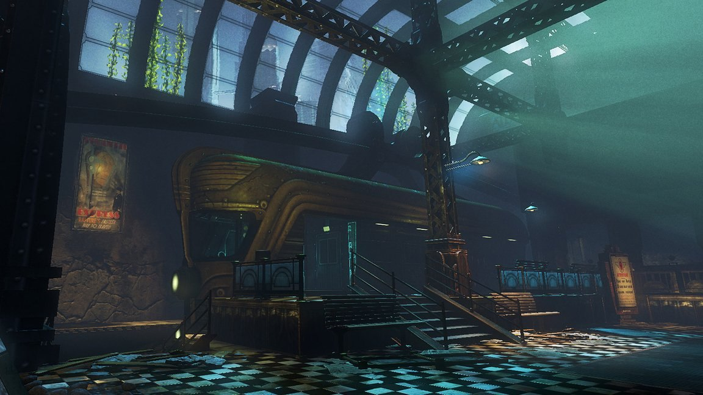
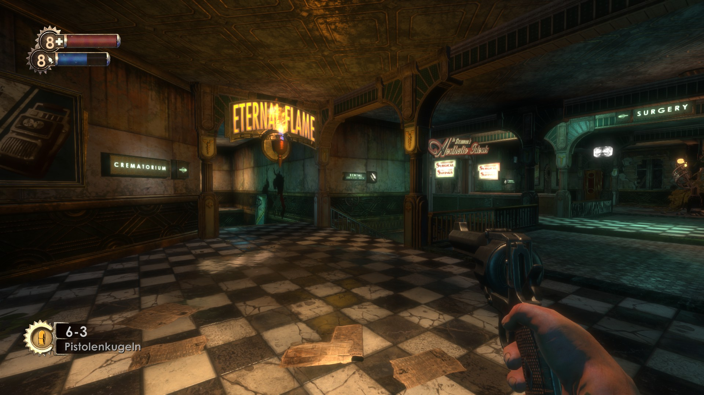
Frozen story
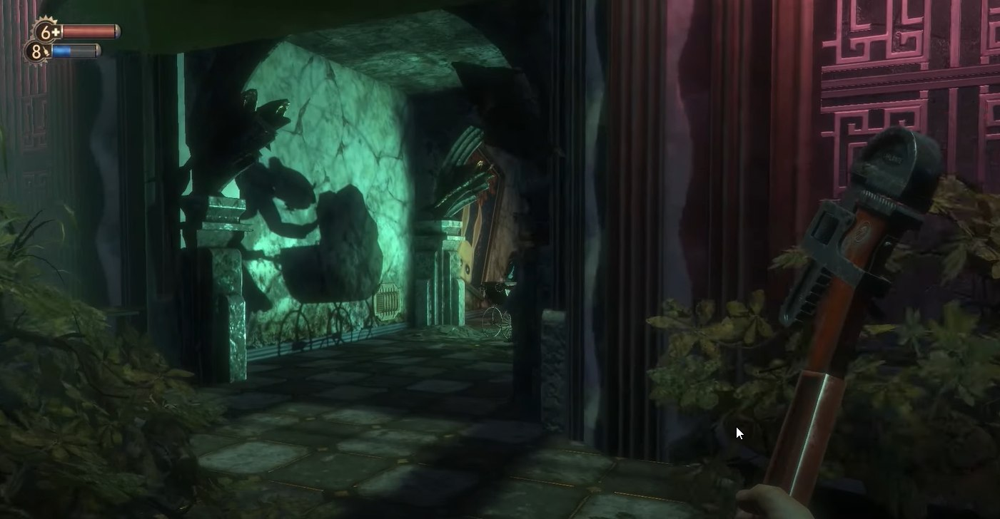
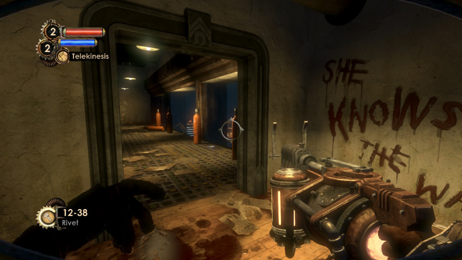
Irrational Games поднабрались опыта на своих предыдущих проектах, так что команда Кена Левина с самого начала предлагает игроку самому докопаться до правды, найти информацию о том, что произошло в этом райском городе, превратившемся в опасный лабиринт. Полуоткрытые локации, которые обычно идут за коридорами, дают игрокам возможность относительно свободно исследовать окружение. Одновременно с этим большинство полуоткрытых локаций имеет вторую составляющую — физические головоломки, основанные на использовании механик игры. Так например взаимодействие электричества и воды. При этом принципы оформления таких локаций отличаются, что дает дизайнерам возможность комбинировать механики игры, стиль и врагов. Если в коридорах игроку просто некуда деться, когда он физически ограничен стенами, которые направляют его вперёд, то в полуоткрытых локациях на первый план выходят ориентиры и точки интереса — и эти места очень удобны для подачи сюжета через анимированные сцены и frozen story. Обратите внимание, что большинство таких сценок находятся среди свисающих, длинных или вытянутых вверх объектов, как на скриншоте выше, где эту роль выполняют белые линии вдоль двери, они дополнительно фиксируют внимание игрока на определенном месте. Это визуально вытягивает пространство вверх, для создания чувства дискомфорта, и одновременно задает направляющие линии, чтобы игроку было понятно куда идти дальше.
Визуальные магниты
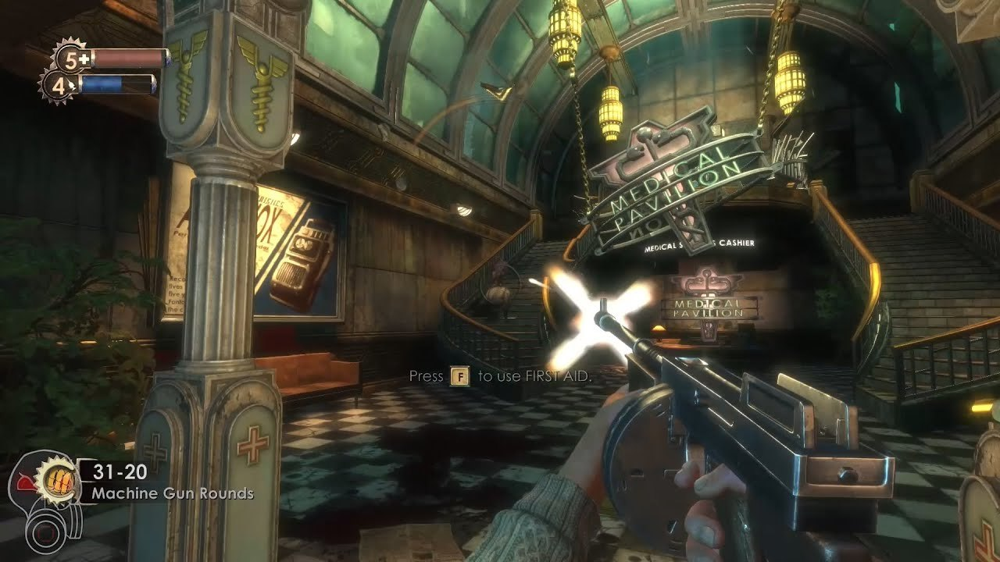
Визуальные магниты в игре созданы в основном за счёт контраста высоты, если среди одинаковых по высоте объектов поставить аналогичный, но выше других раза в два, то человек сначала обращает внимание на более высокий объект и дальше уже на остальные. Такой объект становится доминантой, которая при грамотном использовании может стать интересным решением для боевки, появления врагов или применения механик игры. Как в ситуации на скриншоте, пока игрок занят мобами, которые спускаются по лестнице — визуальная доминанта, сбоку незаметно подходит еще пара противников. Разработчики используют такой прием не один раз, так что со временем у игрока появляется рефлекс оглядываться по сторонам в бою, это было вновинку для игр того периода, когда другие игры старались сконцетрировать врагов во фрустуме камеры.
Также техника визуальных магнитов применяется и для зданий за пределами игровой локации. Они по своему стилю отличаются от внутренних помещений, созданных в стиле 60-х, внешние здания больше похожи на современные строения и здания начала 80-х с большим количеством неона и яркого света, из-за чего возникает ощущение, что их проектировали значительно позже. По словам разработчиков, они сделали это чтобы показать игроку, что за окном реальный мир и создать контраст с ретро объектами вокруг.
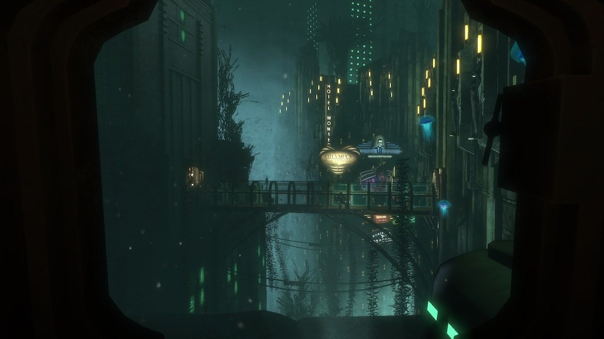
Пасхалки
Игры Кена Левина славились многочисленными отсылками на знаковые антиутопичные произведения и теории закрытых человеческих сообществ, и конечно, BioShock не стал исключением. Кроме архитектуры, которая рассказывает историю города через окружение, число дополнительных источников источников информации, в виде кассет и личных дневников, объявлений по громкой связи, плакатов и реклам, и даже мистических видений, которые преследуют игрока просто зашкаливает. Команде проекта удалось передать историю даже самым невнимательным спидранерам, которые просто бегут вперёд по уровню. Такие пасхалки были не просто разложены на уровне, как каждому из них был придуман отдельный путь, чтобы привести игрока в конкретную точку, откуда было видно предмет. Внимательному исследователю BioShock покажет массу интересных подробностей произошедшего. Надо отметить, что во всех играх Кена в каком-то виде были намеки на эти цифры, ну или на 4891.
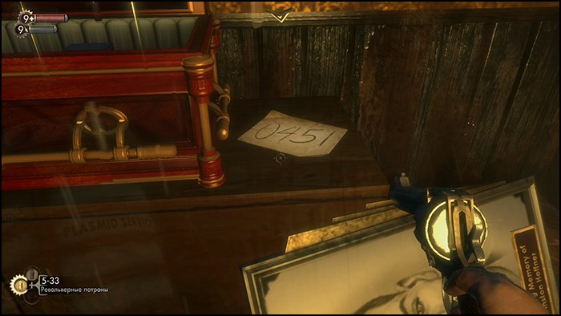
Цветовое окружение
Цвет — другое важное средство направить игрока в отдельные участки уровня. Один из самых ярких примеров в игре это вода и блестящие поверхности, контрастирующие с окружением. Игра подсвечивает объекты, которые можно использовать во время игры. Другой пример — все двери, ведущие вперёд по сюжету, выделены массивными арками. Благодаря такой неочевидной индикации игрок всегда знает, куда ему нужно идти. Здесь также есть вертикальные направляющие в виде водопада справа или мигающих ламп слева, слева внизу дверь выделена направленной подсветкой.
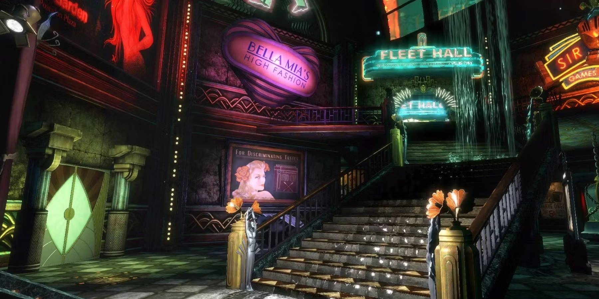
Игра постепенно развивается архитектурно от малых комнат, ко все более большим помещениям, так и нарратив игры использует принцип поэтапного ознакомления с новыми механиками, окружением и врагами. Одним из «правильных» принципов игрового дизайна является демонстрация возможностей врагов до того, как игроку придётся вступить с ними в бой и тут BioShock практически идеально следует правилу «покажи-научи, потом бей», когда каждый класс врагов обладает своими особенностями, которые нужно учитывать во время боевки, но игрок знакомится с ними в процессе обучающих катсцен.
Геометрия под особенности врагов
Многие критики после выходы отмечали хорошо сбалансированный игровой ИИ, это было заслугой левел-дизайнеров, которые для каждого типа врагов сделали отдельную физику перемещения и навигационные карты. Милишники громилы быстро сокращают дистанцию, чтобы добраться до игрока оружием ближнего боя, стрелки держатся на расстоянии и атакуют группами, нитро кидают коктейли Молотова и гранаты, пауки на потолке незаметно подбираются поближе для неожиданного удара. Вокруг игрока постоянно находятся активные точки, которые враги используют для прицеливания, метания гранат или проверки условий что до игрока можно добраться. Большая часть геометрии уровней сделана с учетом, что враги всегда могут добраться и ударить, но в отдельных случаях когда путь перекрыт или его не удалось построить до выбранной точки, то враги включают «режим пряток», убегая от игрока и выманивая его на открытое пространство. Это не было основной фичей врагов в игре, и скорее вспомогательный механизм ИИ, но позволяет держать бои напряженными, чтобы NPC не застревали в объектах и не тупили.
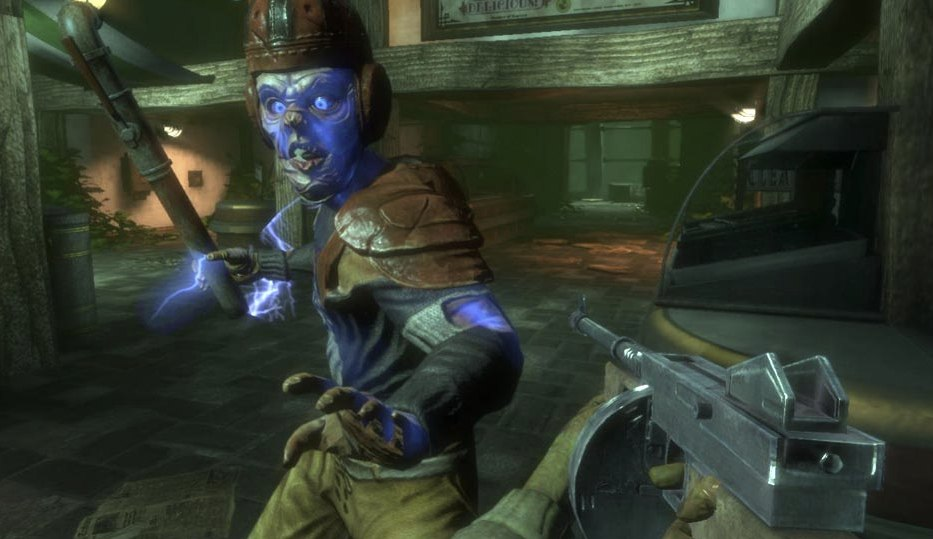
Ну и конечно вершина игрового ИИ игры — Большие Папочки, неустанно сопровождающие Маленьких Сестричек, которые за счет своих размеров не могут использовать всю доступную геометрию на уровне, поэтому для боя в ними выделены отдельные зоны, максимально свободные от закоулков и узких проходов. В узких проходах вы увидите их только в катсценах и специальных участках карты, где они идут по заранее рассчитанному пути нигде не сворачивая.
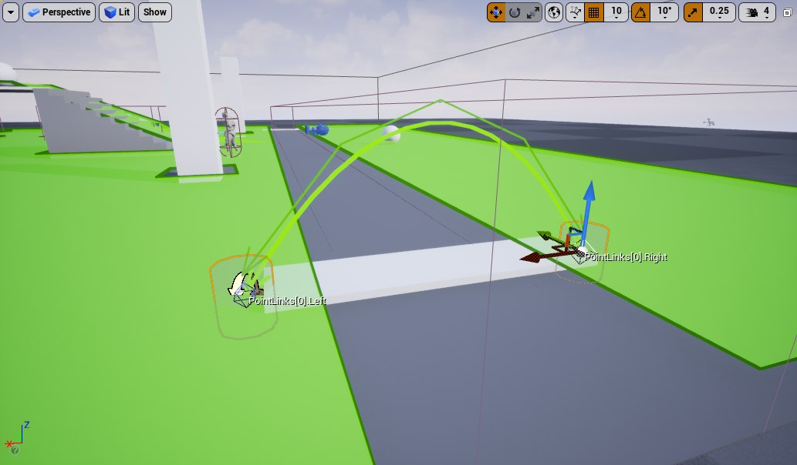
Это называется target path/cover path, обычно их располагают между независимыми участками навигационной карты. Обычно NPC, когда находятся на таком участке пути неуязвимы для оружия, чтобы реакция или смерть не произошли за границами навигационной карты, потому что это может привести к застреванию в предметах, растягиванию модели и другим глюкам. Это можно заметить, если попытаться загнать этого NPC в угол и попробовать там его убить — из-за особенностей анимации смерти, которая требует наличия свободного пространства вокруг БП — убить его в углу не выйдет.
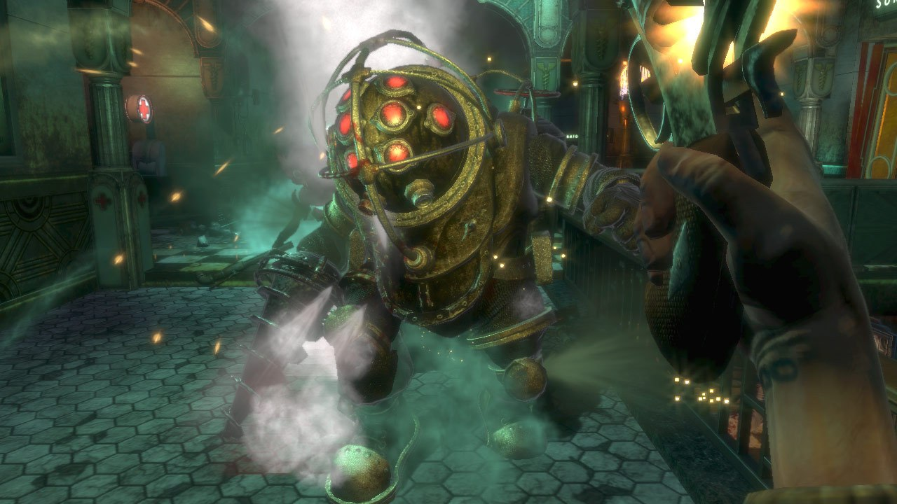
Повествование через окружение
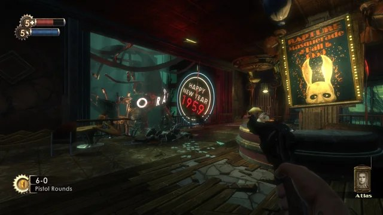
Основоположниками повествования через окружение считаются Харви Смит и Матиас Ворч (GDC 2010), которые продвигают идею, что нарративный дизайн окружения — это одно из свойств пространства, которое можно использовать для глубокого погружения в атмосферу игры. Команда Кена положила этот принцип в основу проектирования уровней и это стало одной из причин, по которой BioShock полюбился игрокам по всему миру. Дизайн уровней игры в BioShock нередко называют восхитительным, большинство критиков отмечали каким реалистичным и атмосферным ощущается подводный город и хвалили игру за продуманный в деталях мир. Резкий контраст между внешне целыми зданиями и внутренней разрухой добавляет драматизма истории, и все это сделано только лишь статическими деталями, когда на всем прохождении игрок видит контраст между городом-мечты и жестокой реальности. Само окружение, даже без врагов, отлично рассказывает историю Восторга, который превратился из рая под водой в поле битвы для раздираемого гражданской войной общества.
На старте игры случался досадный баг, который отключал ИИ врагов — они просто стояли и смотрели в сторону игрока. Позже появился отдельный мод, убирающий стрельбу и врагов, но даже в «режиме» симулятора ходьбы игра получалась не менее пугающей и позволяла понять, что произошло в городе.
После выхода
Уровень популярности игры оказался неожиданным и для самой команды — игра стала настоящим финансовым успехом студии, за первые полгода игра продалась тиражом около миллиона копий. Работа команды в кранче последние месяцы перед релизом была щедро оплачена «восторженными» отзывами игроков. Кто бы мог подумать, что перегруженный философскими размышлениями гибрид РПГ, сюжетной новеллы и шутера, положенный на библейской сюжет о месте богом избранного народа в этом мире, подаваемый через записи и кассеты, сможет действительно заинтересовать широкую аудиторию. Но такой коктейль пришелся по вкусу игрокам, а атмосфера и относительно живой мир, погружающий в детали истории вынес игру на первые позиции игровых чартов. Тем не менее многие критики отмечали сюжетные манипуляциями главным героем с помощью слишком уж явных выборов между добром и злом и мнимой свободы выбора.
Помимо этого были и другие проблемы — как позже Левин признался в интервью игре недоставало еще полгода-года работы, из-за чего студии пришлось порезать механики и не удалось полностью сбалансировать оружие и стрельбу. Даже по меркам 2007 она выглядит слишком уж простой и пластиковой. Но даже с порезанными механиками Bioshock радует разнообразием и оружия и умений, намного больше недостаток времени сказался на сюжете и взаимодействии с Маленькими сестричками, по оригинальной задумке их спасение должно было вести к отсутствию или сильному дефициту Адама у игрока, что бы делало бои непроходимыми. Также как и завязанные на этот выбор концовки игры, в финальной версии осталось всего три концовки, вместо 6 как предполагалось изначально. По задумке Кена игрок, попавший в сложные условия, должен был наблюдать последствия своего выбора на протяжении всей игры, на не только в виде концовок. Но «злые» концовки в итоге стали одной из отличительных особенностей игр серии и полюбились многим, что Левин сам неоднократно признавал.
Про фэн-шуй
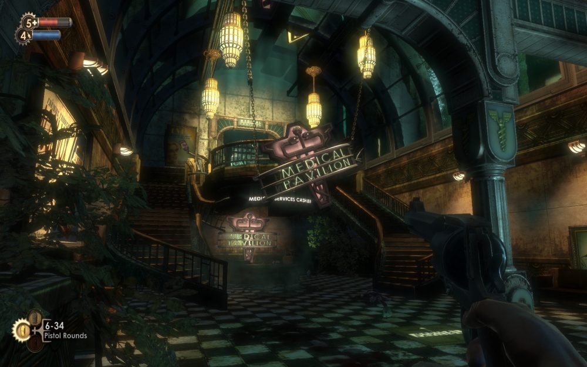
Многие левел-дизайнеры пользуются правилами этого учения при проектировании уровней для создания атмосферы, которая способствует гармонии и комфорту игрока, или наоборот выделяет отдельные участки среди общей картины, хотя и не осознают этого.
Расположение объектов: объекты расположенные не под естественными формами, вроде линии, кругов, углы близких к прямым, не составляющие пары с другими объектами вызывают дискомфорт. И большая часть объектов на уровнях специально расставлена так, чтобы вызывать дискомфорт. Особенно это контрастирует с рекламой и нарративом игры, который показывает город будущего, а вокруг только сломанные вещи.
Использование цвета и света: человек, который живет среди света солнца и привык полагаться на границу света и тени, теплых цветов, опять же чувствует дискомфорт от смазанных теней, неестественного цвета объектов. В игре это проявляется через выкрученную в сторону желтого палитру цветов на уровнях, из-за чего освещение сцен в помещениях, находящихся под водой становится неестественным.
Гармония форм и пропорций: природа сделала вещи гармоничными, мы к этому привыкли, оттого неестественные пропорции обращают на себя внимание, особенно когда они противопоставляются, как например Большой папочка и сестричка, или неестественно вытянутые конечности мутантов. Это отражается не только в дизайне мутантов, но и самих уровней, архитектуре зданий. Вся архитектура и большая часть объектов уровней вытянута вверх, сделано это намеренно, чтобы вызывать чувство дисгармонии с привычным миром.
Это не просто фон
Игра конечно же более многогранна, и в ней нашлось место и «истории еврейского народа», и критике общества монополий и теории самодостаточных государств. Но статья больше про то, что левел-дизайн и архитектура, композиция и разделение пространства играет не менее важную роль, чем сюжетные рельсы и катсцены. Правильно созданные помещения направляют и ограничивают игрока, побуждают исследовать уголки или скрывают пасхалки, могут вызывать чувство страха или желание оборонять конкретную точку. И это лишь небольшая часть того, как левел-дизайн играет с игроком. Окружение это не просто набор текстур или фон для боевки, а инструмент, который играет на инстинктах человека, привыкшего жить среди зданий, комнат и коридоров.
← Все статьи